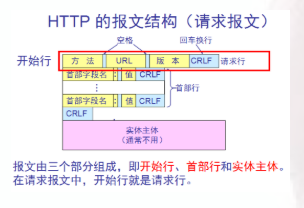
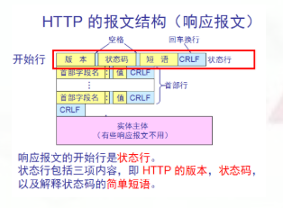
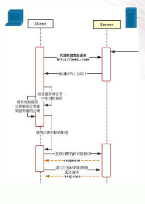

HTTP协议是啥？
在Web应用中，服务器把网页传给浏览器，实际上就是把网页的HTML代码发送给浏览器，让浏览器显示出来。而浏览器和服务器之间的传输协议是HTTP协议。
HTTP（超文本传输协议）是一个基于请求与响应模式的、无状态的、应用层的协议，常基于TCP的连接方式。绝大多数Web开发都是建立在HTTP协议之上的Web应用。HTTP URL是一种特殊类型的URI，包含了用于查找某个资源的足够的信息)的格式如下：
1 | http://host[":"port][abs_path] |
host表示合法的Internet主机域名或者IP地址；port指定一个端口号，为空则使用缺省端口80；abs_path指定请求资源的URI；如果URL中没有给出abs_path，那么当它作为请求URI时，必须以“/”的形式给出。
什么是无状态，什么是有状态
每个请求都是完全独立的，每次连接只处理一个请求。服务器处理完客户的请求，并收到客户的应答后，即断开连接，多个实例对于同一个请求响应的结果是完全一致的，因为服务器不知道客户端是什么状态。即我们给服务器发送HTTP请求之后，服务器根据请求，会给我们发送数据过来，但是，发送完，不会记录任何信息。
有状态就是无状态的对立，服务的实例可以将一部分数据随时进行备，服务器进行交流的时候知道这个是谁，会对请求进行记录。
HTTP就是无状态的，TCP就是有状态的，当然HTTP可以通过Cookie和Session来变成有状态的。
HTTP协议的请求

请求有三部分组成：请求行、消息报头、请求正文。
请求行组成：请求方法+统一资源标识符+HTTP协议版本（Method + Request-URI + HTTP-Version）
一般请求方法有：GET 请求获取Request-URI所标识的资源；POST 在Request-URI所标识的资源后附加新的数据。
HTTP的八种请求方式：
GET请求获取Request-URI所标识的资源POST在Request-URI所标识的资源后附加新的数据HEAD请求获取由Request-URI所标识的资源的响应消息报头PUT请求服务器存储一个资源，并用Request-URI作为其标识DELETE请求服务器删除Request-URI所标识的资源TRACE请求服务器回送收到的请求信息，主要用于测试或诊断CONNECT保留将来使用OPTIONS请求查询服务器的性能，或者查询与资源相关的选项和需求
HTTP协议的响应

服务器向浏览器返回HTTP响应，响应包括：
响应代码：200表示成功，3xx表示重定向，4xx表示客户端发送的请求有错误，5xx表示服务器端处理时发生了错误；
响应类型：由Content-Type指定 以及其他相关的Header；通常服务器的HTTP响应会携带内容，也就是有一个Body，包含响应的内容，网页的HTML源码就在Body中。
一些常见的状态码：200 OK //客户端请求成功；400 Bad Request //客户端请求有语法错误，不能被服务器所理解；401 Unauthorized //请求未经授权；
403 Forbidden //服务器收到请求，但是拒绝提供服；404 Not Found //请求资源不存在；500 Internal Server Error //服务器发生不可预期的错误；
503 Server Unavailable //服务器当前不能处理客户端的请求，一段时间后可能恢复正常。
注意一下：Body的数据类型由Content-Type头来确定，如果是网页，Body就是文本，如果是图片，Body就是图片的二进制数据。浏览器就是依靠Content-Type来判断响应的内容是网页还是图片，是视频还是音乐。浏览器并不靠URL来判断响应的内容，所以，即使URL是http://example.com/abc.jpg，它也不一定就是图片。
HTTP和HTTPS
HTTPS：是以安全为目标的HTTP通道，简单讲是HTTP的安全版，即HTTP下加入SSL层，HTTPS的安全基础是SSL，因此加密的详细内容就需要SSL。http和https使用的是完全不同的连接方式，用的端口也不一样，前者是80，后者是443。http的连接很简单，是无状态的；HTTPS协议是由SSL+HTTP协议构建的可进行加密传输、身份认证的网络协议，比http协议安全。HTTPS的工作流程：
HTTP的SSL加密
摘自：https://blog.csdn.net/shw372029857/article/details/52687906
假设A与B通信，A是SSL客户端，B是SSL服务器端，加密后的消息放在方括号[]里，以突出明文消息的区别。双方的处理动作的说明用圆括号（）括起。
A：我想和你安全的通话，我这里的对称加密算法有DES,RC5,密钥交换算法有RSA和DH，摘要算法有MD5和SHA。
B：我们用DES－RSA－SHA这对组合好了。
这是我的证书，里面有我的名字和公钥，你拿去验证一下我的身份（把证书发给A）。
A：（查看证书上B的名字是否无误，并通过手头早已有的数字的证书验证了B的证书的真实性，如果其中一项有误，发出警告并断开连接，这一步保证了B的公钥的真实性）
（产生一份秘密消息，这份秘密消息处理后将用作对称加密密钥，加密初始化向量和hmac的密钥。将这份秘密消息-协议中称为per_master_secret-用B的公钥加密，封装成称作ClientKeyExchange的消息。由于用了B的公钥，保证了第三方无法窃听）
我生成了一份秘密消息，并用你的公钥加密了，给你（把ClientKeyExchange发给B）
注意，下面我就要用加密的办法给你发消息了！
（将秘密消息进行处理，生成加密密钥，加密初始化向量和hmac的密钥）
[我说完了]
B：（用自己的私钥将ClientKeyExchange中的秘密消息解密出来，然后将秘密消息进行处理，生成加密密钥，加密初始化向量和hmac的密钥，这时双方已经安全的协商出一套加密办法了）
注意，我也要开始用加密的办法给你发消息了！
[我说完了]
A: [我的秘密是…]
B: [其它人不会听到的…]
补充：
- 对称密码算法：是指加密和解密使用相同的密钥，典型的有
DES、RC5、IDEA（分组加密），RC4（序列加密）； - 非对称密码算法：又称为公钥加密算法，是指加密和解密使用不同的密钥（公开的公钥用于加密，私有的私钥用于解密）。比如
A发送，B接收，A想确保消息只有B看到，需要B生成一对公私钥，并拿到B的公钥。于是A用这个公钥加密消息，B收到密文后用自己的与之匹配的私钥解密即可。反过来也可以用私钥加密公钥解密。也就是说对于给定的公钥有且只有与之匹配的私钥可以解密，对于给定的私钥，有且只有与之匹配的公钥可以解密。典型的算法有RSA，DSA，DH； - 散列算法：散列变换是指把文件内容通过某种公开的算法，变成固定长度的值（散列值），这个过程可以使用密钥也可以不使用。这种散列变换是不可逆的，也就是说不能从散列值变成原文。因此，散列变换通常用于验证原文是否被篡改。典型的算法有：
MD5，SHA，Base64，CRC等。
GET和POST的区别
GET是幂等性的，POST不是，因此可以对GET请求的数据做缓存，但是POST请求不能做缓存- 携带的数据格式也有区别
GET上要在url之外带一些参数，POST请求都来自表单提交，粗略的说GET请求没有body，只有url，请求数据放在url的querystring中；POST请求的数据在body中，也导致GET对数据长度有限制(URL的长度是受限制的，它的最大长度是 2048 个字符），但是POST无限制。因为GET用url传输，更加容易看到所以POST的安全性要比GET的安全性高，从攻击的角度，无论是GET还是POST都不够安全，因为HTTP本身是明文协议。每个HTTP请求和返回的每个byte都会在网络上传播，不管是url，header还是body。这完全不是一个“是否容易在浏览器地址栏上看到“的问题。为了避免传输中数据被窃取，必须做从客户端到服务器的端端加密。业界的通行做法就是https，利用SSL加密。 - GET 和 POST 本质上就是 TCP 链接，并无差别。但是由于
HTTP的规定和浏览器/服务器的限制，导致他们在应用过程中体现出一些不同。GET和POST还有一个重大区别，简单的说：GET产生一个TCP数据包；POST产生两个TCP数据包。
HTTP的长连接和短连接
首先 HTTP 协议是无状态的，7也就是协议对于事务处理没有记忆能力，服务器不知道客户端是什么状态。也就是说，打开一个服务器上的网页和你之前打开这个服务器上的网页之间没有任何联系
在 HTTP/1.0 中，默认使用的是短连接。也就是说，浏览器和服务器每进行一次 HTTP 操作，就建立一次连接，但任务结束就中断连接。浏览器每遇到这样一个 Web 资源，就会建立一个 HTTP 会话。从 HTTP/1.1起，默认使用长连接，用以保持连接特性。使用长连接的 HTTP 协议，会在响应头有加入这行代码：
1 | Connection:keep-alive |
在使用长连接的情况下，当一个网页打开完成后，客户端和服务器之间用于传输 HTTP 数据的 TCP 连接不会关闭，如果客户端再次访问这个服务器上的网页，会继续使用这一条已经建立的连接。Keep-Alive 不会永久保持连接，它有一个保持时间，可以在不同的服务器软件中设定这个时间。实现长连接要客户端和服务端都支持长连接。
HTTP 协议的长连接和短连接，实质上是 TCP 协议的长连接和短连接。
长连接多用于操作频繁，点对点的通讯，而且连接数不能太多情况，而像 WEB 网站的 http 服务一般都用短链接，因为这么频繁的连接更省资源
TCP 为什么能进行长连接
TCP 有一个保活功能，保活功能主要为服务器应用提供，服务器应用希望知道客户主机是否崩溃，从而可以代表客户使用资源。比方说如果一个给定的连接在两小时内没有任何的动作，则服务器就向客户发一个探测报文段查看客户主机
WebSocket 和 socket、HTTP 的区别和联系
WebSocket 是 HTML5 规范提出的一种协议，也是基于 TCP 协议的，和 HTTP 协议是并存的两种应用层协议。
而 Socket 其实并不是一个协议，而是为了方便使用 TCP 或 UDP 而抽象出来的一层，是位于应用层和传输控制层之间的一组接口。当两台主机通信时，必须通过 Socket 连接
WebSocket 与 HTTP 的关系
都是一样基于TCP的，都是可靠性传输协议。
都是应用层协议。
WebSocket 是双向通信协议，可以双向发送或接受信息。HTTP 是单向的。
WebSocket 是需要浏览器和服务器握手进行建立连接的。而 HTTP 是浏览器发起向服务器的连接，服务器预先并不知道这个连接。